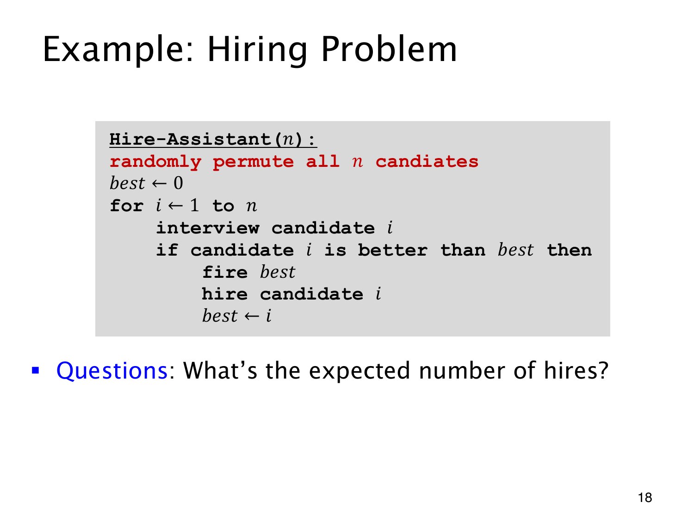

L1.11 · 第 18 页讲解原文
查看这一页课件

遇到新纪录才聘用
Hire-Assistant 先把 n 位候选人均匀随机排列，再逐个面试。best 保存目前最好的人；新人更好时，解雇旧助手、聘用新人、更新 best。初始值 0 是比所有候选人都差的哨兵，表示尚无真实助手。假设能力严格排序，没有并列。
面试必定有 n 次，聘用次数却取决于新纪录出现多少次。例如按 2,1,4,3 面试，数字越大越好，只在 2、4 处聘用，共两次；降序只聘一次，升序则聘 n 次。
令 Xi 表示第 i 位是否被聘用，X=∑iXi。第 i 位要被聘用，必须是前 i 人中最好的。随机次序让这位最好的人落在每个位置的机会相同，故
p(Xi=1)=i1,E(X)=i=1∑ni1.
最终留下的仍是最优秀候选人；随机排列改变的是过程，把反复聘用的平均次数降为调和数规模，而最坏次序仍可聘用 n 次。